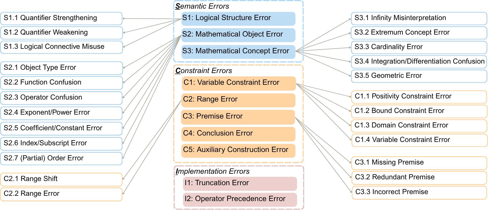
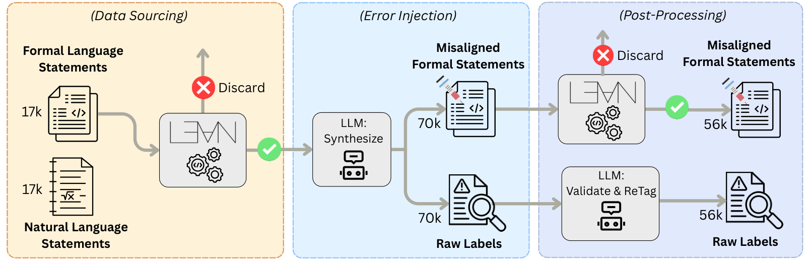

Builds a Lean 4-specific autoformalization error taxonomy and dataset, using Mathlib and benchmark seed statements, with all formal statements compiled via the Lean REPL.
Abstract
The veracious semantic alignment in autoformalization is significant for formal mathematical reasoning. However, existing evaluations provide only opaque binary verdicts or scalar scores, offering no interpretable insight into where or why translations fail. This opacity severely limits both human understanding and automated system improvement. To bridge this gap, we introduce FormalRx, a comprehensive diagnostic evaluation framework that transforms autoformalization assessment from black-box judgments into actionable feedback. At its core is SCI Error Taxonomy, a hierarchical classification scheme decomposing autoformalization errors into 28 distinct categories with strict priority ordering. Building on this taxonomy, FormalRx provides four critical diagnostic capabilities: alignment verdicts, error categorization, error localization, and correction. We instantiate the framework with a diagnostic model FormalRx-8B, trained on 56,287 NL-FL pairs with fine-grained diagnostic annotations, and release FormalRx-Test as the first fine-grained diagnostic benchmark. FormalRx-8B achieves F1-scores of 0.88 (verdict) and 0.71 (categorization), along with accuracies of 0.75 (localization) and 0.73 (correction), substantially outperforming both general-purpose LLMs and specialized baselines. By connecting evaluation with actionable insights, FormalRx enables systematic diagnosis and improvement of autoformalization systems.
Problem
Existing evaluations of autoformalization semantic alignment give only binary verdicts or scalar scores. They say nothing about where or why a natural-language-to-formal translation fails.
Approach
The authors define the SCI Error Taxonomy, which sorts errors into 28 prioritized categories across Semantic, Constraint, and Lean 4-specific Implementation dimensions. Starting from about 17.8k aligned NL-FL seed pairs (Mathlib, PutnamBench, FormalMATH and others), an LLM injects taxonomy-guided errors. Candidates are compiled via the Lean REPL and re-tagged by a second LLM, giving 56,287 annotated pairs. Qwen3 models are fine-tuned to output a verdict, error category, error location and corrected statement in a single generation.

Figure 2 : Overview of the Sci Error Taxonomy, which partitions 28 error categories into three disjoint, exhaustive dimensions: Semantic (S), Constraint (C), and Implementation (I) errors. Location-based catch-all categories ensure exhaustiveness, and priority ordering resolves cases that match more than one. See Section 3.3 for full definitions.

Figure 3 : Overview of the data synthesis pipeline. From 17k aligned NL-FL seed pairs, an LLM applies taxonomy-guided error injection to produce 70k misaligned candidates. Discarding compilation failures leaves the 56k shown; a second LLM then validates and re-tags each candidate against the Sci Error Taxonomy, and the 52,521 samples passing this label check enter the dataset. See Section 4.3 for
Results
FormalRx-8B reaches 0.88 verdict F1, 0.71 categorization F1, 0.75 localization accuracy and 0.73 correction accuracy on the new FormalRx-Test benchmark, outperforming frontier LLMs and specialized baselines. Its advantage narrows on out-of-domain benchmarks.
Model
Verdict F1
Categ. F1
Loc. Acc
Corr. Acc
Qwen3-8B
0.833
0.155
0.398
0.458
GPT-5-mini
0.877
0.397
0.617
0.605
FormalRx-8B
0.881
0.709
0.750
0.729
Selected results on FormalRx-Test (Verdict and Categorization F1; Localization and Correction accuracy)